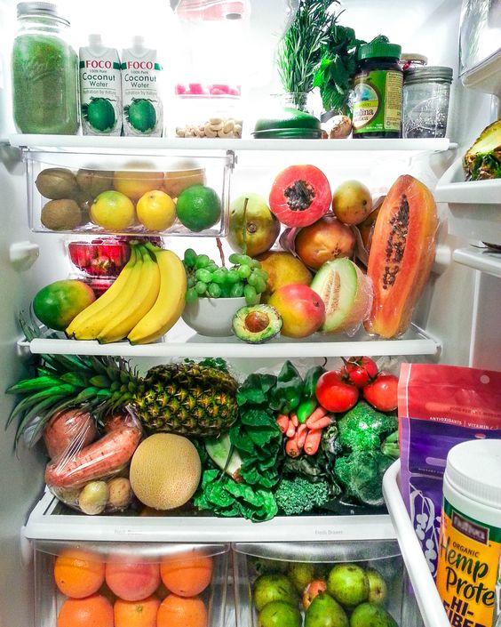

The kitchen
We are in my kitchen!
Look at my fridge:
 I'm vegetarian, so I have many vegetables.
-You can say: there are many vegetables in the fridge.
I have only one papaya.
-You can say: there is one papaya in the fridge.
I have four bananas.
-You can say: there are four bananas in the fridge.
I have one avocado for my guacamole.
-You can say: there is one avocado in the fridge.
We use there is and there are to say that something exists.
Affirmative Sentences
We use there is for singular and there are for plural.
- There is one sink in the kitchen.
- There are three apples on the table.
- There is milk in the fridge.
- There are many plates in my kitchen.
Contractions
There is = there's.
- There's a cake in the oven.
x You cannot contract there are.
- There are six forks on the table.
Problems with vocabulary?
Use this online dictionary